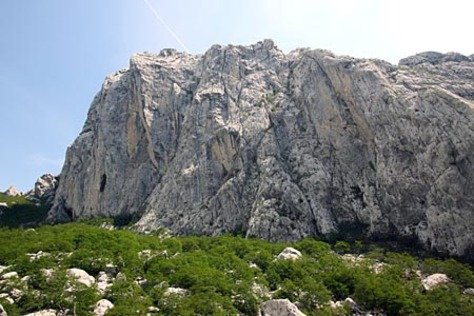
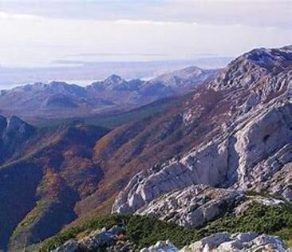
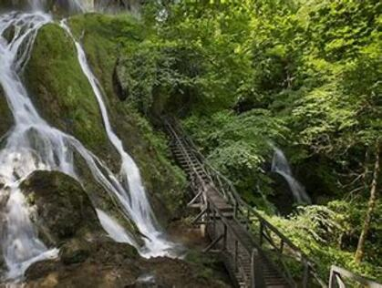
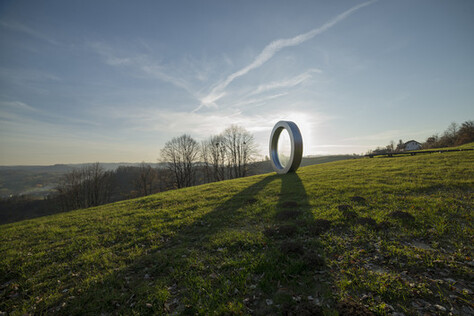
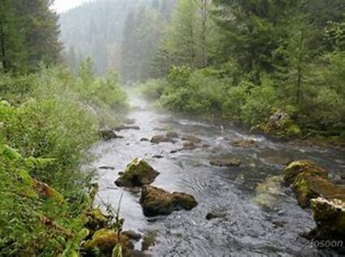

1. Tulove Grede/Potprag/Starigrad Paklenica
Tulove grede su u Domovinskom ratu bile jedno od strateški najvažnijih mjesta na Velebitu!
2. Maslenica/ Starigrad Paklenica/Veliko Rujno
Jedna od najuspješnijih vojnih akcija Hrvatske vojske Operacija Maslenica!
3. Papuk – Strmec (N. Gradiška)
Operacija Papuk 91 treća je napadna operacija hrvatskih snaga u zapadnoj Slavoniji izvedena potkraj 1991. i početkom 1992. godine.
4. Kostajnica – putevima Gordana Lederera
Na brdu Čukuru pokraj Hrvatske Kostajnice poginuli snimatelj Hrvatske radiotelevizije Gordan Lederer dobio je spomen-obilježje. Ubijen je 10. kolovoza 1991. u 33. godini.
5. Saborsko/Kapela
Jedna od najdugotrajnijih obrana i jedan od najvećih zločina u Domovinskom ratu
